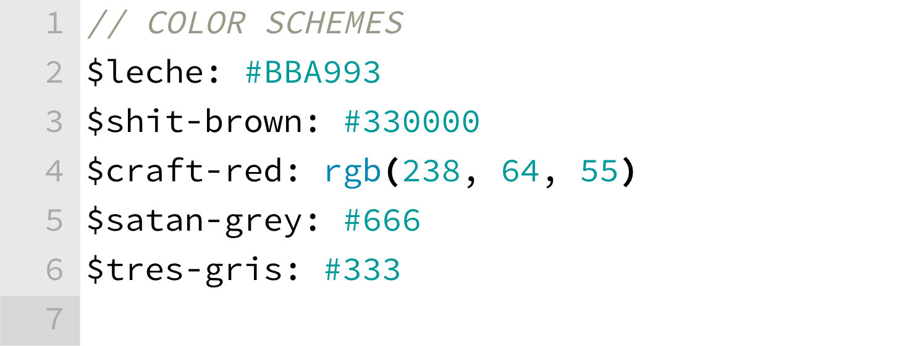

10 Things I've
Learned from
Sass Plugins
1. Grammar proof your selectors.
Grammar proof your selectors.
2. Chain your import statements.
Chain your import statements.
3. Use objects for configs.
Use objects for configs.
Access the config object with getters and setters.
4. Use lots of Sass Partials.
Use lots of Sass Partials.
6. Mixin libraries are cheap
.. or optionally output CSS
8. Format your mixin parameters
so they are easy to read.
Format your mixin parameters
so they are easy to read.
9. Safe-guard your arguments
.. check for empty arguments
.. predefine optional arguments with null
.. idiot proof argument order
10½. Don't be too serious.
Don't be too serious.
